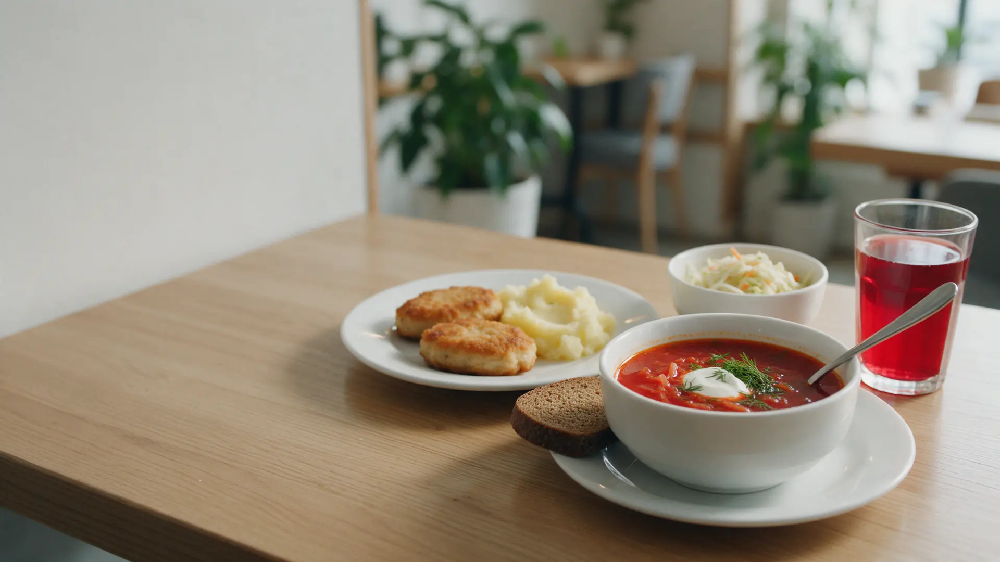
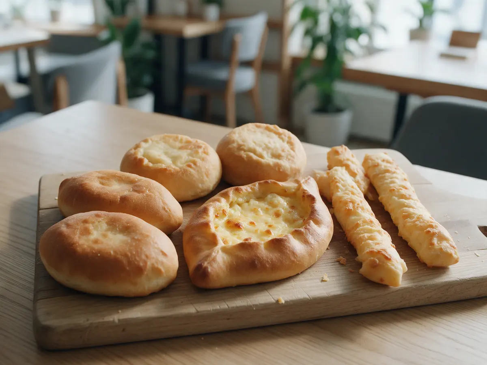
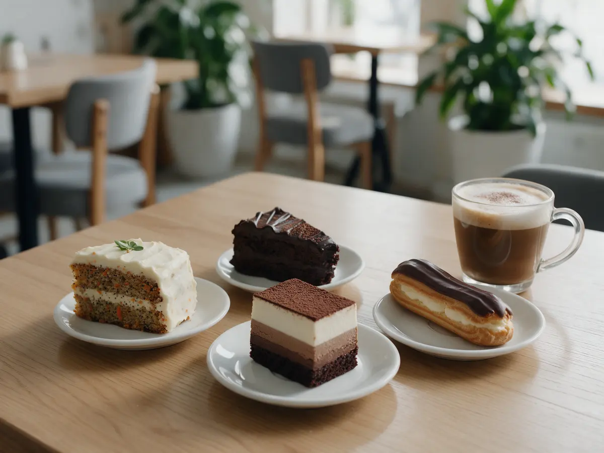
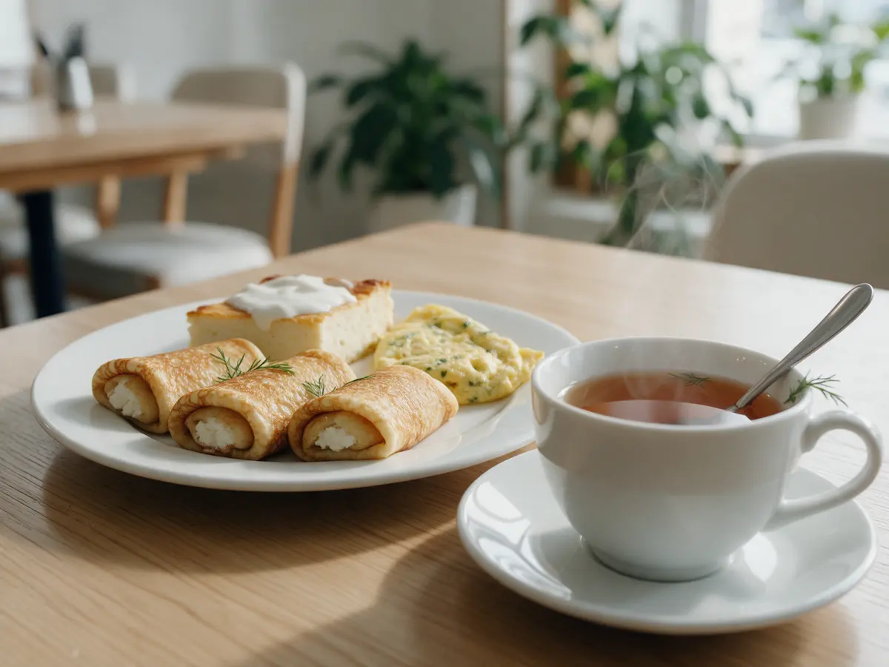

Кафе на Ленина, 80 · каждый день с 10 до 23
Домашние обеды и своя выпечка в центре Перми
Борщ, котлеты, гарниры, салаты и десерты собственного производства. Посмотрите меню и закажите заранее – заберёте без очереди.
- 4,7 на Яндекс.Картах – 1 940 оценок
- Своя пекарня и десерты
- Можно взять половину порции

Что удобно знать заранее
Входит
- Можно взять половину порции
- Есть детское меню
- Еда и выпечка навынос
- Можно с собакой до 35 см
Отдельно, если нужно
- Обслуживание на раздаче – десерты и кофе приносят за столик
- Цены могут меняться – уточняйте в меню дня
Что сегодня на раздаче
Цены из меню на Яндекс.Картах, октябрь 2026. Меню дня меняется каждый день.
Завтраки и горячее
- Омлет160 ₽
- Блинчик с творогом205 ₽
- Блинчик с мясом255 ₽
- Запеканка творожная245 ₽
- Котлета куринаяклассическая домашняя210 ₽
- Гречка рассыпчатая160 ₽
- Овощи на пару255 ₽
Салаты
- Салат из капусты с огурцомпостное155 ₽
- Салат из свеклы с сыром185 ₽
- Сельдь с картофелем и маслинами230 ₽
- Салат Греческий275 ₽
- Цезарь с курицей по-домашнему300 ₽
Выпечка
- Пирожок со свежей капустой95 ₽
- Шанежка картофельная95 ₽
- Хачапури95 ₽
- Сырная палочка99 ₽
- Сосиска в тесте100 ₽
- Пампушка50 ₽
Цены кафе на Ленина, 80. Меню дня – в группе ВКонтакте.
Как сделать предзаказ
- 01
Выберите
Обед с собой, выпечку или десерты к столу.
- 02
День и время
Укажите, когда заберёте.
- 03
Напишите нам
Заявка уйдёт в сообщения нашей группы ВКонтакте.
- 04
Заберите
Ленина, 80 – заказ будет готов к вашему времени.



За что нас любят гости
Как дома
Борщ, котлеты, блинчики и запеканка – простая еда, которую едят каждый день.
Своя выпечка
Пирожки, шанежки, хачапури и десерты делаем сами.
Быстро
Раздача: выбрали, взяли поднос, сели – обед без ожидания официанта.
Центр города
Ленина, 80 – удобно в обед и перед поездом.
Отзывы с Яндекс.Карт
«Одна из лучших столовых, в которых приходилось кушать!!!»
Денис Печкин · 29 июня 2026
«Отличное место для быстрого вкусного обеда. Мы сюда приезжаем по выходным, сын любит борщ, он как домашний.»
Наталья Эберле · 5 июня 2025
«Гала на Ленина, очень достойное место! Большой выбор блюд, всегда свежее.»
Алла Алла · 3 мая 2026
Отзывы с карточки на Яндекс.Картах, без правок.
Частые вопросы
Где посмотреть меню на сегодня?
Меню дня каждый день выходит в нашей группе ВКонтакте.
Можно заказать заранее?
Да, напишите в сообщения группы, по телефону или в MAX – подготовим к вашему времени.
Можно взять половину порции?
Да, многие блюда можно взять половиной.
Есть доставка?
Да, через Яндекс Еду.
Закажите заранее – заберёте без очереди
- Адрес
- Пермь, улица Ленина, 80
- Часы
- Ежедневно 10:00-23:00
- Телефон
- +7 (908) 249-55-29